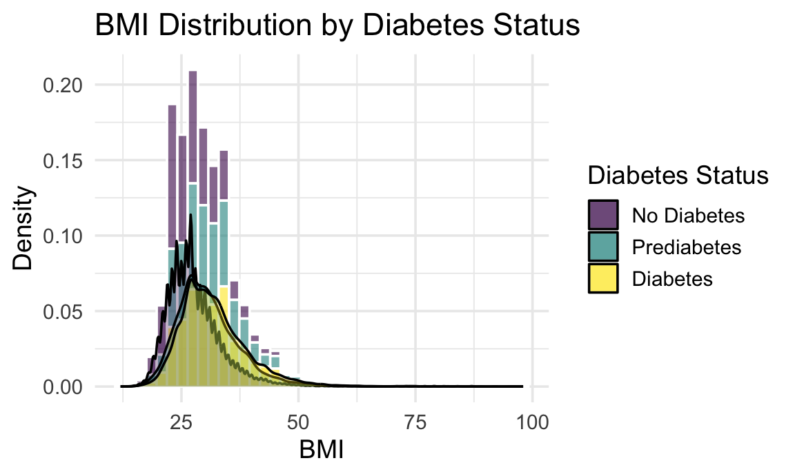

#Load & Clean Dataset
diabetes =
read_csv("Diabete datasets/diabetes_012_health_indicators_BRFSS2015.csv") |>
janitor::clean_names() |>
mutate(
sex = case_match(
sex,
0 ~ "Female",
1 ~ "Male"
),
sex = factor(sex),
age = case_match(
as.numeric(age),
1 ~ "18-24",
2 ~ "25–29",
3 ~ "30–34",
4 ~ "35–39",
5 ~ "40–44",
6 ~ "45-49",
7 ~ "50-54",
8 ~ "55-59",
9 ~ "60-64",
10 ~ "65-69",
11 ~ "70-74",
12 ~ "75-79",
13 ~ "80+"
),
age =
factor(age,
levels =
c("18-24","25–29", "30–34", "35–39",
"40–44","45-49","50-54","55-59",
"60-64","65-69","70-74","75-79","80+"),
ordered = TRUE),
education = case_match(
as.numeric(education),
1 ~ "Never attended school",
2 ~ "Grade 1-8",
3 ~ "Grade 9-11",
4 ~ "High school graduate",
5 ~ "College 1-3",
6 ~ "College graduate"
),
education =
factor(education,
levels =
c("Never attended school","Grade 1-8", "Grade 9-11",
"High school graduate","College 1-3",
"College graduate"),
ordered = TRUE),
income = case_match(
as.numeric(income),
1 ~ "Less than $10,000",
2 ~ "$10,000 - $15,000",
3 ~ "$15,000 - $20,000",
4 ~ "$20,000 - $25,000",
5 ~ "$25,000 - $35,000",
6 ~ "$35,000 - $50,000",
7 ~ "$50,000 - $75,000",
8 ~ "$75,000 +"
),
income =
factor(income,
levels =
c("Less than $10,000","$10,000 - $15,000",
"$15,000 - $20,000","$20,000 - $25,000",
"$25,000 - $35,000","$35,000 - $50,000",
"$50,000 - $75,000","$75,000 +"),
ordered = TRUE),
gen_hlth = case_match(
as.numeric(gen_hlth),
1 ~ "Poor",
2 ~ "Fair",
3 ~ "Good",
4 ~ "Very Good",
5 ~ "Excellent"
),
gen_hlth =
factor(gen_hlth,
levels =
c("Poor", "Fair", "Good", "Very Good", "Excellent"),
ordered = TRUE),
diabetes_012 =
factor(diabetes_012,
levels = c(0,1,2),
labels = c("No Diabetes", "Prediabetes", "Diabetes"))
)## Rows: 253680 Columns: 22
## ── Column specification ────────────────────────────────────────────────────────
## Delimiter: ","
## dbl (22): Diabetes_012, HighBP, HighChol, CholCheck, BMI, Smoker, Stroke, He...
##
## ℹ Use `spec()` to retrieve the full column specification for this data.
## ℹ Specify the column types or set `show_col_types = FALSE` to quiet this message.binary_vars <- c(
"high_bp", "high_chol", "chol_check",
"smoker", "stroke", "heart_diseaseor_attack",
"phys_activity", "hvy_alcohol_consump", "any_healthcare",
"no_docbc_cost", "diff_walk", "fruits", "veggies"
)
diabetes[binary_vars] <- lapply(
diabetes[binary_vars],
function(x) factor(ifelse(x == 1, "Yes", "No"))
)Data have 253680 records and 22 variables. Each record contains an individual’s BRFSS survey responses.
#data summary
library(skimr)
skim(diabetes)| Name | diabetes |
| Number of rows | 253680 |
| Number of columns | 22 |
| _______________________ | |
| Column type frequency: | |
| factor | 19 |
| numeric | 3 |
| ________________________ | |
| Group variables | None |
Variable type: factor
| skim_variable | n_missing | complete_rate | ordered | n_unique | top_counts |
|---|---|---|---|---|---|
| diabetes_012 | 0 | 1 | FALSE | 3 | No : 213703, Dia: 35346, Pre: 4631 |
| high_bp | 0 | 1 | FALSE | 2 | No: 144851, Yes: 108829 |
| high_chol | 0 | 1 | FALSE | 2 | No: 146089, Yes: 107591 |
| chol_check | 0 | 1 | FALSE | 2 | Yes: 244210, No: 9470 |
| smoker | 0 | 1 | FALSE | 2 | No: 141257, Yes: 112423 |
| stroke | 0 | 1 | FALSE | 2 | No: 243388, Yes: 10292 |
| heart_diseaseor_attack | 0 | 1 | FALSE | 2 | No: 229787, Yes: 23893 |
| phys_activity | 0 | 1 | FALSE | 2 | Yes: 191920, No: 61760 |
| fruits | 0 | 1 | FALSE | 2 | Yes: 160898, No: 92782 |
| veggies | 0 | 1 | FALSE | 2 | Yes: 205841, No: 47839 |
| hvy_alcohol_consump | 0 | 1 | FALSE | 2 | No: 239424, Yes: 14256 |
| any_healthcare | 0 | 1 | FALSE | 2 | Yes: 241263, No: 12417 |
| no_docbc_cost | 0 | 1 | FALSE | 2 | No: 232326, Yes: 21354 |
| gen_hlth | 0 | 1 | TRUE | 5 | Fai: 89084, Goo: 75646, Poo: 45299, Ver: 31570 |
| diff_walk | 0 | 1 | FALSE | 2 | No: 211005, Yes: 42675 |
| sex | 0 | 1 | FALSE | 2 | Fem: 141974, Mal: 111706 |
| age | 0 | 1 | TRUE | 13 | 60-: 33244, 65-: 32194, 55-: 30832, 50-: 26314 |
| education | 0 | 1 | TRUE | 6 | Col: 107325, Col: 69910, Hig: 62750, Gra: 9478 |
| income | 0 | 1 | TRUE | 8 | $75: 90385, $50: 43219, $35: 36470, $25: 25883 |
Variable type: numeric
| skim_variable | n_missing | complete_rate | mean | sd | p0 | p25 | p50 | p75 | p100 | hist |
|---|---|---|---|---|---|---|---|---|---|---|
| bmi | 0 | 1 | 28.38 | 6.61 | 12 | 24 | 27 | 31 | 98 | ▇▅▁▁▁ |
| ment_hlth | 0 | 1 | 3.18 | 7.41 | 0 | 0 | 0 | 2 | 30 | ▇▁▁▁▁ |
| phys_hlth | 0 | 1 | 4.24 | 8.72 | 0 | 0 | 0 | 3 | 30 | ▇▁▁▁▁ |
diabetes |>
ggplot(aes(x = bmi, fill = diabetes_012, group = diabetes_012)) +
geom_histogram(aes(y = ..density..), bins = 40, alpha = 0.6, color = "white") +
geom_density(alpha = 0.3) +
theme_minimal(base_size = 14) +
labs(
title = "BMI Distribution by Diabetes Status",
x = "BMI",
y = "Density",
fill = "Diabetes Status"
)